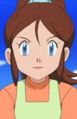
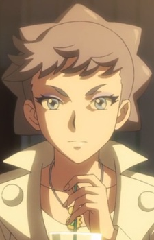

|
Celia Mauser |
|
Celia Mauser is the Lord Mauser. She and Pacifica look very similar. They have siblings that look similar as well. |
|  |
Daniela |
|
Daniela is a Kindergarden teacher at a Pokemon Day Care in Unova. She met Ash on his journey. |
|  |
Diantha |
|
Diantha is famous and renowned actress in the Kalos region. She is the Champion as well. She can mega - evolve with her Gardevoir. |
| |
Katrina |
- Pokemon Advanced Generations
|
Katrina is a character that May met while traveling with Ash. She is the granddaughter of Edna and Jonathan. |
 |
Lorelei |
|
Lorelei is a member of the Kanto Elite Four. She specializes in ice types Pokemon. She known for her logical, calculated, and cool style of battling. |
 |
Mrs. Watase |
- Children Who Chase Lost Voices
|
Mrs. Watase is Asuna's mother. She is a nurse employed by a hospital. She does not spend time with Asuna. |
 |
Pacifica Casull |
|
Pacifica Casull is the Scrapped Princess. She was adopted by Shannon and Raquel Casull's parents. Her sweet nautre does not seem to suggest anything about her. She is young and innocent despite what been said about her. Pacicfica is a happy girl who has a bright look on life. She is prophesized to destroy the world. |
 |
Riza Hawkeye |
- Fullmetal Alchemist: Brotherhood
- Fullmetal Alchemist: Brotherhood Specials
- Fullmetal Alchemist: Brotherhood - 4-Koma Theater
- Fullmetal Alchemist: The Sacred Star of Milos
|
Riza Hawkeye is Roy Mustang's most trusted subordinate. She acts as his personal assitant. She protect him from further danger. Hawkeye been known to keep cool in a danger situations. Riza specializes in fire arms and sniper rifles. |